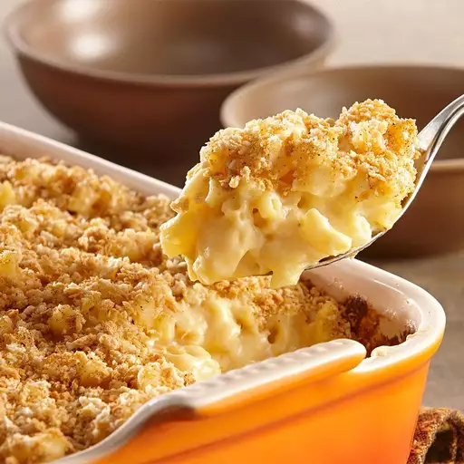

Macaroni

Description
Macaroni and cheese is the ultimate American comfort food. In this recipe, tender macaroni is coated in a rich, creamy cheese sauce with a golden crumb topping. Always satisfying and irresistibly indulgent.
Ingredients
- 1 (3 ounce) package pancetta, minced
- ½ cup diced carrot
- ½ cup diced yellow onion
- 1 tablespoon olive oil
- 7 ounces ground beef
- ½ cup diced celery
- 6 ounces ground pork
- ½ cup dry red wine
- 2 cups vegetable broth, divided, more as needed
- 1 ½ cups plain tomato sauce
- salt to taste
- 1/2 cup whole milk
Steps
- Start preparing ragù by sautéeing pancetta in a large stockpot over medium-high heat until fat renders, 1 to 2 minutes. Add carrot, celery, onion, and oil. Cook, stirring until vegetables have softened, about 5 minutes. Add beef and pork. Cook while mashing meat into small pieces until browned, 5 to 7 minutes.
- Add wine and bring to a boil. Add 1 cup broth and tomato sauce. Reduce heat to low, and partially cover the pot to allow steam to escape. Simmer ragù, stirring occasionally, about 1 hour.
- Add 1 more cup of broth to ragù. Continue simmering, stirring often, until very thick, 1 to 1 1/2 hours. Add more broth only if necessary; ragù should drop, not run, off a spoon. Set aside.
- Start preparing pasta after ragù is cooked. Bring water and salt to a boil in a small saucepan. Add spinach, cover, and return to a boil. Cook, stirring gently, until spinach is heated through. Remove from heat, leave covered, and let cool.
- Drain spinach in a mesh strainer set over a bowl, pressing it down with a fork to squeeze out as much water as possible; reserve the liquid. Purée spinach in a blender until smooth.
- Sift flour into a bowl. Make a well in the center. Add eggs, spinach, and about 1 tablespoon of the reserved spinach cooking liquid. Mix together by hand or using the dough hook in a stand mixer, adding more liquid if needed, until dough becomes a smooth ball. Cover with plastic wrap and let sit at room temperature for 30 minutes.
- Taste the ragù and season with salt. Remove from heat, add milk, and stir to combine. Set aside to cool.
- Bake in the preheated oven until the ragù is bubbling and the cheese has browned, 25 to 30 minutes. Let lasagne rest for 10 or 15 minutes at room temperature before slicing.
Home